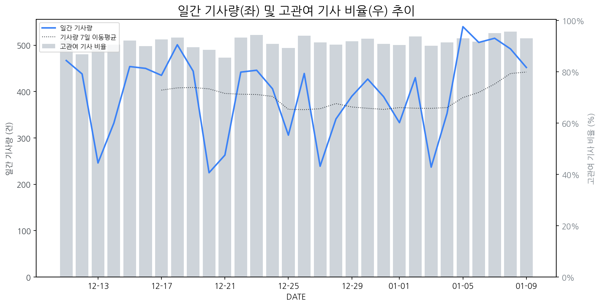

1
시장 활동 지표
기사량 추세 & 이상 징후 탐지
시장의 '전체 기사량'이 평소보다 비정상적으로 급증했는지(Spike)를 차트로 확인하고, LLM이 분석한 급등의 핵심 원인을 파악할 수 있음

고관여 기사란? 산업 연관 키워드로 수집된 기사들 중 디스플레이 키워드에 가중치를 반영하여 도출된 관련성 높은 기사
수집된 기사 수 (2026-01-09)
452
+5% WoW
기사량 변동 수준 (7일 이동평균 대비)
±6.7% 이하
2
오늘의 키워드
급격한 관심 ↑, 주목해야 할 키워드
1
기아
+7.7σ
기아가 소형 전기 SUV 'EV2'를 세계 최초 공개하며 컴팩트 전기차 시장 공략을 본격화했습니다.
Related Metrics
금일 언급량: 27, 전일 대비: +27
Interpretation
EV2 채택 가능성 상승
Next Step
'기아' 관련 상세 기사 및 경쟁사 반응 모니터링
2
모니터
+3.1σ
CES 2026에서 게이밍 및 OLED 모니터 신기술 경쟁이 부각되며 관련주 급등.
Related Metrics
금일 언급량: 18, 전일 대비: +15
Interpretation
OLED 모니터 시장 확대 전망
Next Step
'모니터' 관련 상세 기사 및 경쟁사 반응 모니터링
3
현대모비스
+2.5σ
현대모비스가 프로농구 경기에서 정관장에 패하며 5연승이 좌절되었습니다.
Related Metrics
금일 언급량: 7, 전일 대비: +7
Interpretation
무관, 영향 없음.
Next Step
'현대모비스' 관련 상세 기사 및 경쟁사 반응 모니터링
4
애플
+1.6σ
애플의 신규 아이폰 라인업(폴더블, 아이폰 에어) 출시 루머와 관련 디스플레이 패널 공급 논의가 활발하기 때문입니다.
Related Metrics
금일 언급량: 10, 전일 대비: +7
Interpretation
폴더블 및 신규 폼팩터 수요 증가.
Next Step
핵심 토픽 'Foldable_Display_Topic' 관련 신호입니다. 3번 섹션(키워드 감성분석)에서 해당 토픽의 감성 변동을 교차 확인하세요.
3
실시간 Risk 키워드
경계해야 할 시그널 탐지
특정 토픽의 부정 감성 점수가 급등할 때 이를 즉시 탐지하고, "근거 기사" 링크를 통해 리스크의 실체를 빠르게 파악할 수 있음
키워드 분석 결과, 오늘은 걱정할 만한 하락 신호가 없습니다. (부정 언급량 변화: +1.5σ 이내)
4
주요 이벤트 모니터링
실시간 산업 동향 파악을 위한 주요 활동
최근 발생한 주요 기업들의 신제품 출시, 투자 등 주요 이벤트를 제공하여 매일 경쟁사 동향을 확인할 수 있음
CES 2026에서 삼성디스플레이와 LG디스플레이는 혁신적인 폼팩터 기술을 선보이며 '화면의 자유'라는 새로운 비전을 제시했습니다. 이는 기존 디스플레이의 형태적 제약을 넘어선 새로운 사용자 경험을 예고합니다.
Impact
이러한 폼팩터 혁신은 폴더블, 롤러블, 스트레처블 등 다양한 형태의 디스플레이 적용을 가속화하며 스마트폰, 태블릿, TV를 넘어 웨어러블 및 차량용 디스플레이 시장까지 폭넓게 확장될 것입니다.
Next Step
디스플레이 제조 기업은 폼팩터 혁신 기술에 대한 지속적인 R&D 투자와 더불어, 새로운 폼팩터에 최적화된 콘텐츠 및 활용 시나리오 개발을 위한 생태계 구축에 집중해야 합니다.
수소차 관련주인 우수AMS, 아진전자부품, 아이에이, 현대로템 등이 시장에서 긍정적인 흐름을 보이고 있습니다. 이는 수소차 산업 전반에 대한 투자 및 관심 증가를 시사합니다.
Impact
해당 이벤트는 직접적으로 디스플레이 시장에 미치는 영향은 크지 않으나, 전반적인 산업 투자 심리 변화는 간접적으로 영향을 줄 수 있습니다.
Next Step
수소차 관련 기업들의 향후 사업 확장 계획을 주시하며, 디스플레이 기술과의 연관성 또는 새로운 수요처 발굴 가능성을 탐색해야 합니다.
엔비디아는 지싱크 모니터에 펄사(Pulsar)와 앰비언트 어댑티브(Ambient Adaptive) 기술을 적용하여 새로운 사용자 경험을 제공한다고 발표했습니다. 이는 화면의 프레임 속도 및 주변 환경에 따라 모니터의 밝기와 색상을 동적으로 조절하는 혁신적인 기술입니다.
Impact
엔비디아의 최신 기술 적용은 게이밍 및 고품질 디스플레이 시장에서 몰입감과 시각적 편안함을 향상시키며, 경쟁사들에게 기술 혁신 경쟁을 촉발할 것으로 예상됩니다.
Next Step
디스플레이 제조 기업은 엔비디아의 새로운 기술과의 호환성을 확보하고, 차별화된 사용자 경험을 제공하기 위한 제품 개발 및 마케팅 전략을 수립해야 합니다.
CES 2026에서 PC 생태계를 변화시킬 핵심 디스플레이 기술들이 공개되었습니다. 이는 차세대 PC 경험을 위한 혁신적인 디스플레이 솔루션들을 선보이는 자리였습니다.
Impact
이번 CES 2026에서 공개된 PC 생태계 관련 디스플레이 기술들은 사용자 경험 향상과 함께 고성능, 고품질 디스플레이 시장의 성장을 견인할 것으로 예상됩니다.
Next Step
디스플레이 제조 기업은 공개된 핵심 기술들의 시장 적용 가능성과 경쟁력을 평가하여, 차세대 PC 제품에 적용할 디스플레이 솔루션 개발 로드맵을 구체화해야 합니다.
미국 대법원이 트럼프 전 대통령의 상호관세 부과 관련 판결을 연기하며 해당 이슈의 불확실성이 커졌습니다. 로이터통신은 이 소식을 보도하며 시장의 주목을 받고 있습니다.
Impact
트럼프발 무역 정책의 불확실성 증가는 디스플레이 패널 및 완제품의 수출입 비용 변동 가능성을 높여 글로벌 디스플레이 시장의 예측 불가능성을 증폭시킬 수 있습니다.
Next Step
각 디스플레이 제조 기업은 잠재적인 관세 변화 시나리오에 대비한 공급망 및 생산 계획의 유연성을 확보해야 합니다.